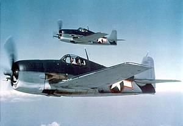

The F6F-5N night-fighter variant was fitted with an AN/APS-6 radar in a fairing on the outer-starboard wing. A few standard F6F-5s were also fitted with camera equipment for reconnaissance duties as the F6F-5P. [30] While all F6F-5s were capable of carrying an armament mix of one 20-mm (.79-in) M2 cannon in each of the inboard gun bays (220 rounds per gun), along with two pairs of .50-in (12.7-mm) machine guns (each with 400 rounds per gun), this configuration was only used on later F6F-5N night fighters.[31] The F6F-5 was the most common F6F variant, with 7,870 being bu
